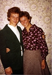
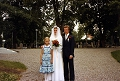

Nils Roger Granström Fredman
Musiker, egenföretagare, Fredmans Musik AB, Västra Vingåker, Sörmland.
| Född: | 1954-12-23 Åsträsk, Kalvträsk fs, Burträsk sn. |
|---|
| Vigsel: | 1980-06-28 Vingåker, Västra Vingåkers fs, Vingåkers kn (D). [1] |
|---|
| Levde: | 1981 Ekeskogsv 14, Skövde, Skövde fs, Skövde kn. [2] |
|---|
| Levde: | 1991 Daggkåpan 81, Daggkåpev 13 B, Skövde, Skövde fs, Skövde kn. [1] |
|---|
| Levde: | 2008 Storgatan 65, Västra Vingåkers fs, Vingåkers kn. [3] |
|---|
| Skrivna på: | 2009 Storgatan 54, Vingåker, Västra Vingåkers fs, Vingåkers kn. [3] |
|---|
| Levde: | 2016 Veddalavägen 10, Vingåker, Västra Vingåkers fs, Vingåkers kn. [4] |
|---|
| Barn: |
|---|
| Sara Karolina Fredman (1984 - ) |
| Jacob Mattias Fredman (1987 - ) |
| Eric Michael Fredman (1989 - ) |
| Hanna Debora Fredman (1993 - ) |
Noteringar
Utbildad musikpedagog på träblåsinstrument vid Musiklinjen, FramnäsFfolkhögskolan med den legendariske musikpedagogen Kurt Forsberg, klarinettist som lärare och mentor. Roger gift med Ingegerd f. Dufberg, Västra Vingåker, också hon utbildad musikpedagog vid Musiklinjen, Framnäs Folkhögskola på stråkinstrument.
Se länk:
www.fredmansmusik.com
Personhistoria
| Årtal | Ålder | Händelse |
|---|
| 1954 |
|
Födelse 1954-12-23 Åsträsk, Kalvträsk fs, Burträsk sn |
| 1976 |
21 år |
Halvsystern Maria Helena Alexandra Pörn föds 1976-05-19 Kvevlax fs, Finland [5] |
| 1980 |
25 år |
Vigsel Ingegerd Maria Dufberg 1980-06-28 Vingåker, Västra Vingåkers fs, Vingåkers kn (D) [1] |
| 1981 |
|
Levde Ingegerd Maria Dufberg 1981 Ekeskogsv 14, Skövde, Skövde fs, Skövde kn [2] |
| 1984 |
29 år |
Dottern Sara Karolina Fredman föds 1984-04-15 Skövde, Skövde fs, Skövde kn [1] |
| 1987 |
32 år |
Sonen Jacob Mattias Fredman föds 1987-06-01 Skövde, Skövde fs, Skövde kn [1] |
| 1989 |
34 år |
Sonen Eric Michael Fredman föds 1989-03-10 Skövde, Skövde fs, Skövde kn [1] |
| 1991 |
|
Levde Ingegerd Maria Dufberg 1991 Daggkåpan 81, Daggkåpev 13 B, Skövde, Skövde fs, Skövde kn [1] |
| 1993 |
38 år |
Dottern Hanna Debora Fredman föds 1993-04-05 Örebro stad |
| 1997 |
42 år |
Modern Ruth Elvira Granström dör 1997-02-21 Skellefteå, S:t Olovs fs, Skellefteå kn |
| 1997 |
42 år |
Fadern Nils Oskar Pörn dör 1997-04-28 Sofiehemsv 8, Ålidhem fs, Umeå kn [6] |
| 2008 |
|
Levde Ingegerd Maria Dufberg 2008 Storgatan 65, Västra Vingåkers fs, Vingåkers kn [3] |
| 2009 |
|
Skrivna på Ingegerd Maria Dufberg 2009 Storgatan 54, Vingåker, Västra Vingåkers fs, Vingåkers kn [3] |
| 2016 |
|
Levde Ingegerd Maria Dufberg 2016 Veddalavägen 10, Vingåker, Västra Vingåkers fs, Vingåkers kn [4] |
Källor
| [1] | Mantalslängd 1991, Skaraborgs län |
| |
| | |
| [2] | Mtl Skaraborgs län 1981 |
| |
| | |
| [3] | www.hitta.se |
| |
| | |
| [4] | https://www.ratsit.se/sok/avancerat/person |
| |
| | |
| [5] | Mtl Västerbottens län 1981 |
| |
| | |
| [6] | RTB 97 / SPAR 97 |
| |
|
 |
| 1955. Roger. |
| |
 |
| 1960. Roger, Viveka, Ruth och Jan Fredman. |
| |
|  |
| 1977-09-17. Roger Fredman och Ingegerd Dufberg Fredman |
| |
|  |
| 1980-06-28. Brudparet Ingegerd Dufberg och Roger Fredman. |
|


{kind=link}
{kind=link}